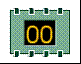
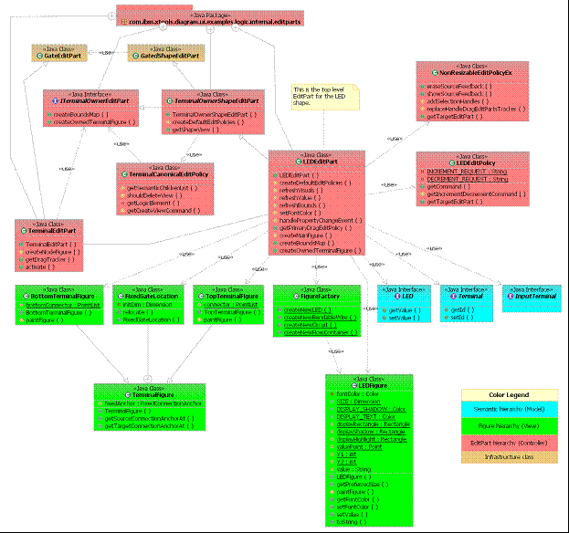

Version: 0.1 |
Date: July 13, 2005 |
This tutorial provides the reader with the steps to create a new shape within a diagram client.
More information about these extension points can be found in the SDK documentation.
In this tutorial, we will use the Logic Diagram Example to illustrate how to create a shape that has semantic meaning and can be displayed on the diagram surface. To gain familiarity with the Logic Diagram Example, refer to the Logic Example Guide.
[back to top]
In order to create a new shape in a diagram editor, then it is necessary to utilize the diagram layer's service infrastructure that exposes some extension points that clients need to provide extensions to. The initial entry point for this extensibility is through the palette service. The palette service allows clients to add entries or drawers to an existing palette or create one for their own editor. For a detailed description of the service infrastructure, please refer to: org.eclipse.gmf.runtime.doc.isv\html\tutorials\Service and Provider Tutorial.html.
There are two main entry points to be concerned about when adding a palette item. The first is the descriptor code (plugin.xml) and then the provider code in java which the descriptor code is registering. If we examine the descriptor code, the example is registering an extension for paletteProvider and then indicating the provider used is the DefaultPaletteProvider that is available from the base plug-ins. This provides the palette with some basic tools for selection, notes and text. If this is not desired then a new palette provider would have to be constructed. Next, the editor ID is necessary so that the palette can be contributed for a particular editor. Finally all the entries for defining the individual palette entries and drawers can be defined and a reference to the PaletteFactory which will construct the tools.
If we examine a particular shape in the Logic example plug-in (LED), we can see what is necessary to display that palette entry. The drawer is defined separately as it's own <entry> in the <contribution> section. The individual palette entry is another <entry> that references the icons, text description and ID that the factory will use to instantiate the tool.
</paletteProvider>
</contribution>
</entry>
id="LED">
small_icon="icons/ledicon16.gif"
path="/logicDrawer/"
kind="tool"description="%LEDTool.Description"large_icon="icons/ledicon24.gif"
<entrylabel="%LEDTool.Label"
</entry>
</expand>
</content>
<!--expand by default for LogicEditors -->
<content>
<expand>
id="logicDrawer">
small_icon="icons/comp.gif"
path="/"
description="%LogicDrawer.Description"
kind="drawer"
<entrylabel="%LogicDrawer.Label"
<contributionfactoryClass="org.eclipse.gmf.examples.runtime.diagram.logic.internal.providers.LogicPaletteFactory">
<!-- class="org.eclipse.gmf.runtime.diagram.ui.parts.IDiagramWorkbenchPart"-->
</editor>
<editorid="LogicEditor">
</Priority>
<Priorityname="Low">
<paletteProviderclass="org.eclipse.gmf.runtime.diagram.ui.providers.internal.DefaultPaletteProvider">
<extensionpoint="org.eclipse.gmf.runtime.diagram.ui.paletteProviders">
</extension>
Once the semantic model is created, then there is the matter of how to create and manipulate these elements in the context of the diagram editor. The GMF common layer has an extension-point for defining element types and helper classes that allow for editing of these declared types called 'org.eclipse.gmf.runtime.emf.type.core.elementTypes'. When a client provides an extension for this extension point, they are declaring a set of elements that the editor supports and hooks via these helper classes for editing these elements. The general mechanism is that the tool sends a 'request' through the EditPart hierarchy. The SemanticEditPolicy picks up the request and gets the appropriate IMetamodelType that is used to retrieve the edit command.
Create the set of element types in the plugin.xml that represent the different elements that can be created in your editor. In the case of the Logic editor:
<extensionpoint="org.eclipse.gmf.runtime.emf.type.core.elementTypes">
<metamodel
nsURI="http://www.eclipse.org/gmf/runtime/1.0.0/logicsemantic">
<metamodelType
id="org.eclipse.gmf.examples.runtime.diagram.logic.model"
eclass="Model"
edithelper="org.eclipse.gmf.examples.runtime.diagram.logic.internal.edithelpers.ContainerElementEditHelper">
</metamodelType>
<metamodelType
id="logic.led"
icon="icons/ledicon16.gif"
name="%LEDTool.Label"
eclass="LED"
edithelper="org.eclipse.gmf.examples.runtime.diagram.logic.internal.edithelpers.LEDEditHelper">
</metamodelType>
?
Create the corresponding EditHelper classes that are specified in the extension descriptor. Create the necessary commands that are returned by the EditHelper classes to edit and/or create the semantic elements described by the metamodelType descriptors. See ConfigureLogicElementCommand and CreateWireCommand.
After the semantic element is created, then a notation representation of the semantic element is needed in order to display on the diagram. The notation element is instantiated from the notation meta-model which is a generic model for persisting diagram artifacts. The notation can be thought as the logic persistence for the 'boxes' and 'lines' that make up the composition of the diagram elements. In general, the notation meta-model stores position, layout information, color and font and any property related to the display and/or editing of the diagram elements.
Similar to how a semantic element is created, the tool will send a request to the targeted EditPart (usually the one under the mouse). In order to respond to the tool request we need to create a provider for creating the notation (View) for the new shape. First it is necessary to add plug-in.xml extension for the org.eclipse.gmf.runtime.diagram.core.viewProviders extension point. We indicate the viewClass context which indicates the type of View we want to create (org.eclipse.gmf.runtime.notation.Node), and provide a hint for our provider to be invoked upon ('LED').
Once the descriptor code is complete, then we need to construct the java class which will actually provide the factory. We can create a new class LogicViewProvider which subclasses from AbstractViewProvider. The purpose of the provider class is to map the hint specified in the plugin.xml with the view class that will construct the notation. This is done in the getNodeViewClass method where it returns the view class that will set the styles that are associated with the view and create contained views by default. The LEDView.java will serve this purpose. The LEDView subclasses from AbstractShapeView. Please refer to the org.eclipse.gmf.examples.runtime.diagram.logic.internal.views.LEDView class for details of what initialization is needed.
<extensionpoint="org.eclipse.gmf.runtime.diagram.core.viewProviders">
<viewProviderclass="org.eclipse.gmf.examples.runtime.diagram.logic.internal.providers.LogicViewProvider">
<Priorityname="Lowest">
</Priority>
<contextviewClass="org.eclipse.gmf.runtime.notation.Diagram"semanticHints="">
</context>
<contextviewClass="org.eclipse.gmf.runtime.notation.Node"semanticHints="LED">
</context>
</viewProvider>
</extension>
Now that the notation can be constructed we need a controller (EditPart) that will synchronize the View with the drawing surface canvas for display (of IFigures). In order to respond to the tool request we need to create a provider for creating the controller (EditPart) for the new shape. This is a provider for the EditPartService. Similar to the viewProvider, it is necessary to add plug-in.xml extensions for the editpartProviders extension point. In the extension you specify the view class that the provider is being triggered on with an id and then provide that id as a context.
<extension
point="org.eclipse.gmf.runtime.diagram.ui.editpartProviders">
<editpartProvider class="org.eclipse.gmf.examples.runtime.diagram.logic.internal.providers.LogicEditPartProvider">
<Priority
name="Lowest">
</Priority>
<object class="org.eclipse.gmf.examples.runtime.diagram.logic.internal.views.LEDView"
id="LED">
</object>
<context
views="LED">
</context>
In the LogicEditPartProvider class there is simply a mapping from the View class to the EditPart class that needs to be created in the getNodeEditPartClass method. The LEDEditPart class contains code for creating the IFigure that actually renders the shape and synchronizing the semantic properties with this IFigure. See LEDFigure for details.
It can be a little confusing as to where the actually rendering of the shape takes place since there are 3 contributing hierarchies to the composition of a diagram (View / EditPart / IFigure). It's more clear when you consider explicitly the separation of responsibility of each hierarchy. The 3 hierarchies collaborate to make up a pattern called the Model-View-Controller pattern. The idea of this pattern is that
a Model can be maintained separately from the UI used to represent it to the user. In this case the 'View' hierarchy can be considered the model and is needed to persist and manage the diagram data. The 'EditPart' hierarchy is the controller that creates the corresponding IFigure and synchronizes it's attributes with the corresponding View object. Finally, the IFigure object is merely responsible for rendering (actual painting on the diagram) and reflecting constraints set by the EditPart hierarchy.
Create a new draw2d IFigure subclass that overrides the paintFigure routine to draw the figure as desired. (AndGateFigure)
In the EditPart created in #Create the controller (EditPart) for the shape. , override the createNodeFigure routine to return the new Figure you just created.


In this tutorial, we did the following:
Copyright (c) 2000,2005 IBM Corporation and others. All Rights Reserved.